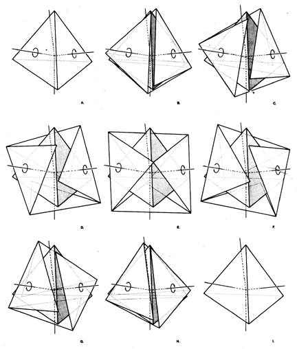

|  |
| Fig. 938.16 Octahedron Produced from Precessed Edges of Tetrahedron: An octahedron may be produced from a single tetrahedron by detaching the tetra edges and precessing each of the faces 60 degrees. The sequence begins at A and proceeds through BCD at arrive at E with an octahedron of four positive triangular facets interspersed symmetrically with four empty triangular windows. From F through I the sequence returns to the original tetrahedron. |